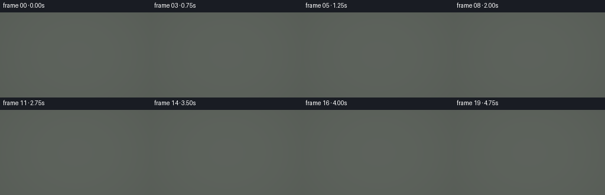
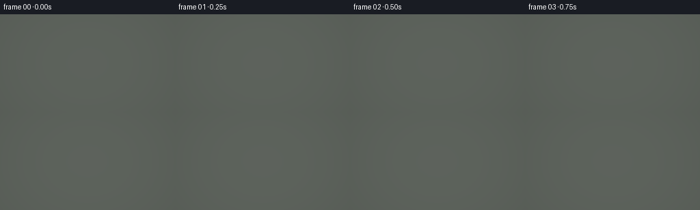
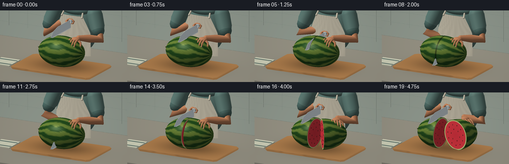
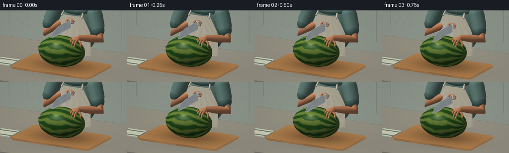

CODING AGENTS AS PIXEL WORLD MODELS
traex/GPT-6.1-Sol · motion_rationality_0008
点击播放 · 原生 RGB 像素
逐轮保存的候选
回放视频、检查图与代码变化。
每份候选均可单独播放。实际图片检查记录在下方工具轨迹中。
候选 01播放与检查图
点击播放 · 原生 RGB 像素


展开代码变化
--- 上一保存版本
+++ 本次保存版本
@@ -0,0 +1,361 @@
+import json, math, time
+from pathlib import Path
+import numpy as np
+from PIL import Image
+import artifact_io
+
+ROOT=Path(__file__).resolve().parent
+SPEC=json.loads((ROOT/'task_spec.json').read_text())
+S=3
+W,H=SPEC['width']*S,SPEC['height']*S
+rng=np.random.default_rng(27)
+
+def unit(v):
+ v=np.asarray(v,float); return v/np.maximum(np.linalg.norm(v,axis=-1,keepdims=True),1e-9)
+
+def rotate_y(a):
+ return np.array([[np.cos(a),0,np.sin(a)],[0,1,0],[-np.sin(a),0,np.cos(a)]])
+
+class Scene:
+ def __init__(self): self.items=[]
+ def mesh(self,v,f,c,n=None,mat=0):
+ v=np.array(v,float); f=np.array(f,int)
+ if n is None:
+ n=np.zeros_like(v); fn=np.cross(v[f[:,1]]-v[f[:,0]],v[f[:,2]]-v[f[:,0]])
+ for k in range(3): np.add.at(n,f[:,k],fn)
+ n=unit(n)
+ c=np.array(c,float)
+ if c.ndim==1: c=np.tile(c,(len(v),1))
+ self.items.append((v,f,c,np.array(n,float),mat))
+ def ellipsoid(self,pos,r,col,lat=12,lon=24,R=None,mat=0):
+ R=np.eye(3) if R is None else R
+ th=np.linspace(.0001,np.pi-.0001,lat+1); ph=np.linspace(0,2*np.pi,lon,endpoint=False)
+ t,p=np.meshgrid(th,ph,indexing='ij')
+ b=np.stack([np.sin(t)*np.cos(p),np.cos(t),np.sin(t)*np.sin(p)],-1).reshape(-1,3)
+ v=(b*np.array(r))@R.T+pos; n=unit((b/np.array(r))@R.T)
+ f=[]
+ for i in range(lat):
+ for j in range(lon):
+ a=i*lon+j;b0=i*lon+(j+1)%lon;d=(i+1)*lon+j;e=(i+1)*lon+(j+1)%lon
+ f.extend([(a,d,b0),(b0,d,e)])
+ self.mesh(v,f,col,n,mat)
+ def tube(self,points,radii,col,segments=14,mat=0):
+ points=np.array(points,float); vs=[]; ns=[]
+ for i,p in enumerate(points):
+ tangent=unit(points[min(i+1,len(points)-1)]-points[max(0,i-1)])
+ helper=np.array([0,1,0]) if abs(tangent[1])<.93 else np.array([0,0,1])
+ u=unit(np.cross(tangent,helper)); v=np.cross(tangent,u)
+ for j in range(segments):
+ a=2*np.pi*j/segments; norm=u*np.cos(a)+v*np.sin(a)
+ rad=radii[i]
+ if np.isscalar(rad): rr=rad
+ else: rr=rad[0]*np.cos(a)*u+rad[1]*np.sin(a)*v
+ vs.append(p+rr*norm if np.isscalar(rr) else p+rr); ns.append(norm)
+ faces=[]
+ for i in range(len(points)-1):
+ for j in range(segments):
+ a=i*segments+j;b=i*segments+(j+1)%segments;c=(i+1)*segments+j;d=(i+1)*segments+(j+1)%segments
+ faces.extend([(a,c,b),(b,c,d)])
+ self.mesh(vs,faces,col,ns,mat)
+ for p,r in [(points[0],radii[0]),(points[-1],radii[-1])]:
+ rr=r if np.isscalar(r) else max(r)
+ self.ellipsoid(p,[rr]*3,col,lat=6,lon=14,mat=mat)
+ def box(self,lo,hi,col,mat=0):
+ lo=np.array(lo); hi=np.array(hi)
+ v=[]; f=[]; n=[]
+ for axis in range(3):
+ for side in [0,1]:
+ other=[x for x in range(3) if x!=axis]
+ start=len(v)
+ for a,b in [(0,0),(1,0),(1,1),(0,1)]:
+ p=lo.copy().astype(float);p[axis]=hi[axis] if side else lo[axis];p[other[0]]=hi[other[0]] if a else lo[other[0]];p[other[1]]=hi[other[1]] if b else lo[other[1]]
+ v.append(p);nn=np.zeros(3);nn[axis]=1 if side else -1;n.append(nn)
+ f.extend([(start,start+1,start+2),(start,start+2,start+3)])
+ self.mesh(v,f,col,n,mat)
+
+CAM=np.array([3.4,3.35,6.5]); TARGET=np.array([0,1.17,-.03])
+forward=unit(TARGET-CAM); right=unit(np.cross(forward,[0,1,0])); up=np.cross(right,forward)
+VIEW=np.stack([right,up,-forward],axis=1)
+VIEW_WIDTH=3.48
+LIGHT=unit(np.array([-3.5,6,4.0]))
+
+def project(v):
+ q=(v-TARGET)@VIEW
+ return np.stack([W*.5+q[:,0]*W/VIEW_WIDTH,H*.5-q[:,1]*W/VIEW_WIDTH,q[:,2]],-1)
+
+# Materials: 0 soft diffuse, 1 rind, 2 red fruit, 3 steel, 4 wood, 5 cloth, 6 countertop
+
+def render(scene):
+ image=np.zeros((H,W,3),np.float32);image[:]=[.67,.70,.66]
+ depth=np.full((H,W),1e6,np.float32)
+ for verts,faces,cols,norms,mat in scene.items:
+ p=project(verts)
+ for inds in faces:
+ tri=p[inds]
+ x0=max(0,int(np.floor(tri[:,0].min())));x1=min(W-1,int(np.ceil(tri[:,0].max())))
+ y0=max(0,int(np.floor(tri[:,1].min())));y1=min(H-1,int(np.ceil(tri[:,1].max())))
+ if x1<x0 or y1<y0:continue
+ a,b,c=tri
+ den=(b[1]-c[1])*(a[0]-c[0])+(c[0]-b[0])*(a[1]-c[1])
+ if abs(den)<1e-7:continue
+ yy,xx=np.mgrid[y0:y1+1,x0:x1+1]; xx=xx+.5; yy=yy+.5
+ wa=((b[1]-c[1])*(xx-c[0])+(c[0]-b[0])*(yy-c[1]))/den
+ wb=((c[1]-a[1])*(xx-c[0])+(a[0]-c[0])*(yy-c[1]))/den
+ wc=1-wa-wb
+ zz=wa*a[2]+wb*b[2]+wc*c[2]
+ sub=depth[y0:y1+1,x0:x1+1]
+ hit=(wa>=-1e-5)&(wb>=-1e-5)&(wc>=-1e-5)&(zz<sub)
+ if not hit.any():continue
+ weights=np.stack([wa[hit],wb[hit],wc[hit]],-1)
+ nn=unit(weights@norms[inds]); pos=weights@verts[inds]
+ base=weights@cols[inds]/255.
+ ndl=np.maximum(0,nn@LIGHT)
+ hemi=np.clip(nn[:,1]*.5+.5,0,1)
+ illum=.40+.16*hemi+.50*ndl
+ view=unit(CAM-pos); half=unit(view+LIGHT)
+ nh=np.maximum(0,np.sum(nn*half,axis=1))
+ if mat==1: # rind
+ spec=.23*nh**44
+ elif mat==2: spec=.10*nh**30
+ elif mat==3:
+ spec=.8*nh**70+.26*nh**8
+ illum=.62+.43*ndl
+ base*=1+(.07*np.sin(pos[:,2]*1800))[:,None]
+ else: spec=.035*nh**25
+ if mat==4:
+ # fine wood grain with long, gently wandering fibers
+ grain=np.sin(pos[:,2]*215+2*np.sin(pos[:,0]*5)+np.sin(pos[:,0]*14))
+ grain2=np.sin(pos[:,2]*680+pos[:,0]*7)
+ base*= (1+.055*grain+.022*grain2)[:,None]
+ # fruit and hands cast soft contact shadows on the cutting board
+ g=np.exp(-((pos[:,0]-.08)/.88)**2-((pos[:,2]-.1)/.58)**2)
+ base*= (1-.37*g)[:,None]
+ if mat==5:
+ fibers=np.sin(pos[:,0]*920)*np.sin(pos[:,1]*1100)
+ base*= (1+.022*fibers)[:,None]
+ if mat==6:
+ texture=np.sin(pos[:,0]*211+pos[:,2]*421)*np.sin(pos[:,0]*611-pos[:,2]*136)
+ base*= (1+.021*texture)[:,None]
+ shadow=np.exp(-((pos[:,0])/.99)**2-((pos[:,2]-.13)/.8)**2)
+ base*=(1-.16*shadow)[:,None]
+ color=base*illum[:,None]+spec[:,None]*np.array([1,.96,.88])
+ image[y0:y1+1,x0:x1+1][hit]=color
+ sub[hit]=zz[hit]
+ # A soft photographic color curve; a little lens vignette.
+ yy,xx=np.mgrid[0:H,0:W]
+ vig=1-.075*((xx/W-.5)**2*2+(yy/H-.5)**2)
+ image=np.clip(image*vig[...,None],0,1)
+ image=np.power(image,.94)
+ out=Image.fromarray(np.uint8(image*255)).resize((SPEC['width'],SPEC['height']),Image.Resampling.LANCZOS)
+ return np.asarray(out)
+
+skin=[190,124,85]; nail=[215,167,136]
+shirt=[88,118,111]; apron=[227,218,194]
+
+def arm(sc,side,wrist,holding=False):
+ shoulder=np.array([side*.60,1.96,-.72])
+ elbow=np.array([side*.82,1.35,-.51])
+ if holding: elbow+=np.array([.06,.02,.02])
+ delta=elbow-shoulder
+ sc.tube([shoulder,shoulder+delta*.48,shoulder+delta*.62],[.22,.205,.175],shirt,segments=22,mat=5)
+ sc.tube([shoulder+delta*.57,elbow,(elbow+np.array(wrist))*.5,np.array(wrist)],[.146,.132,.107,.071],skin,segments=20)
+ # cuff hem, a fine seam at the end of each short sleeve
+ sc.tube([shoulder+delta*.61,shoulder+delta*.65],[.178,.177],[72,101,95],segments=22,mat=5)
+
+def gripping_hand(sc,edge,x=0):
+ y=edge+.18
+ palm=np.array([x-.065,y+.04,-.64])
+ sc.ellipsoid(palm,[.099,.064,.155],skin,lat=12,lon=22)
+ for i in range(4):
+ z=-.48-i*.075
+ # fingers curl around the narrow knife handle; pads are below it
+ pts=[[x-.084,y+.045,z],[x+.025,y+.054,z],[x+.085,y+.005,z],[x+.054,y-.053,z],[x-.005,y-.057,z]]
+ sc.tube(pts,[.027,.028,.025,.022,.016],skin,segments=12)
+ sc.ellipsoid([x+.058,y+.002,z+.002],[.017,.027,.014],nail,lat=6,lon=12)
+ sc.tube([[x-.11,y+.04,-.55],[x-.15,y-.016,-.48],[x-.083,y-.06,-.44],[x-.025,y-.049,-.48]],[.035,.032,.027,.021],skin,segments=12)
+ return palm+np.array([-.025,.025,-.10])
+
+def support_hand(sc,shift,rot):
+ center=np.array([.0+shift,1.055,.08]);R=rotate_y(rot)
+ def tr(p):return center+R@np.array(p)
+ palm=tr([.40,.384,-.055])
+ sc.ellipsoid(palm,[.12,.055,.105],skin,lat=12,lon=22,R=R)
+ for i in range(4):
+ x=.26+i*.074
+ length=.23-abs(i-1.4)*.023
+ points=[tr([x,.38,-.012]),tr([x,.365,.07]),tr([x,.317,.15]),tr([x,.245,length])]
+ sc.tube(points,[.026,.026,.023,.018],skin,segments=12)
+ sc.ellipsoid(tr([x,.252,length]),[.019,.009,.029],nail,lat=6,lon=12,R=R)
+ sc.tube([tr([.47,.365,-.06]),tr([.56,.302,-.035]),tr([.58,.224,.005])],[.035,.031,.023],skin,segments=14)
+ return palm+R@np.array([.04,.014,-.10])
+
+def knife(sc,edge,x):
+ # Forged chef's knife: spine, bolster, tapered tip, and a bright cutting bevel.
+ outline=[[-.43,edge+.235],[.29,edge+.235],[.57,edge+.17],[.73,edge+.025],[.62,edge],[ -.43,edge]] # coordinates z,y
+ v=[];n=[]
+ for s in [-1,1]:
+ for z,y in outline:v.append([x+s*.009,y,z]);n.append([s,0,0])
+ f=[]
+ for s in [0,6]:
+ for j in range(1,5):f.append([s,s+j,s+j+1])
+ for j in range(6):f.extend([[j,(j+1)%6,j+6],[(j+1)%6,(j+1)%6+6,j+6]])
+ sc.mesh(v,f,[190,201,206],n,3)
+ # edge's separate light-catching strip
+ v=[[x+.010,edge,-.43],[x+.010,edge,.62],[x+.010,edge+.025,.70],[x+.010,edge+.018,-.43]]
+ sc.mesh(v,[[0,1,2],[0,2,3]],[230,236,238],[[1,0,0]]*4,3)
+ sc.box([x-.037,edge+.145,-.49],[x+.037,edge+.239,-.405],[178,189,190],3)
+ sc.tube([[x,edge+.185,-.83],[x,edge+.185,-.77],[x,edge+.185,-.49]],[.044,.050,.043],[38,34,29],segments=14)
+ for z in [-.76,-.63,-.53]:
+ sc.ellipsoid([x+.047,edge+.185,z],[.007,.012,.012],[165,170,164],lat=6,lon=12,mat=3)
+
+MELON=np.array([0,1.055,.08]); RAD=np.array([.675,.423,.469])
+
+def melon_half(sc,sign,offset=0,angle=0,show_face=True,cut_edge=None):
+ R=rotate_y(angle);center=MELON+np.array([offset,0,0])
+ lat=30;lon=88
+ theta=np.linspace(.00001,np.pi*.5,lat+1);phi=np.linspace(0,2*np.pi,lon,endpoint=False)
+ t,p=np.meshgrid(theta,phi,indexing='ij')
+ base=np.stack([sign*np.cos(t),np.sin(t)*np.cos(p),np.sin(t)*np.sin(p)],-1).reshape(-1,3)
+ loc=base*RAD; vs=loc@R.T+center; normals=unit((base/RAD)@R.T)
+ # Organic wandering longitudinal dark and light green rind stripes.
+ pp=p.reshape(-1);tt=t.reshape(-1)
+ stripe=np.sin(11*pp+.7*np.sin(tt*5+pp*2)+.35*np.sin(pp*7+tt*11))
+ wave=np.clip((stripe-.05)/.42+.5,0,1)
+ fleck=np.sin(pp*89+tt*147)*np.sin(pp*137-tt*53)
+ cols=np.array([30,68,25])[None,:]+wave[:,None]*np.array([68,55,23])+fleck[:,None]*4
+ if cut_edge is not None:
+ seam=(np.abs(loc[:,0])<.009)&(vs[:,1]>cut_edge+.008)
+ cols[seam]*=.42
+ faces=[]
+ for i in range(lat):
+ for j in range(lon):
+ a=i*lon+j;b=i*lon+(j+1)%lon;c=(i+1)*lon+j;d=(i+1)*lon+(j+1)%lon
+ faces.extend([[a,c,b],[b,c,d]])
+ sc.mesh(vs,faces,cols,normals,1)
+ # tiny dry stem at one pole
+ if sign==-1:
+ sc.tube([center+R@[-.673,0,0],center+R@[-.707,.025,0],center+R@[-.72,.033,.008]],[.024,.018,.009],[94,90,39],segments=12)
+ if not show_face:return
+ v=[];colors=[];norm=[]
+ rings=[0,.20,.40,.62,.80,.906,.922,.953,.983,1]
+ count=96
+ for rad in rings:
+ for j in range(count):
+ a=j*2*np.pi/count
+ point=np.array([-sign*.0009,RAD[1]*rad*np.cos(a),RAD[2]*rad*np.sin(a)])
+ v.append(center+R@point); norm.append(R@np.array([-sign,0,0]))
+ speck=math.sin(j*47.17+rad*853)*3
+ if rad<=.906:col=np.array([222,48,61])+np.array([speck,-speck*.5,-speck*.3])+rad*np.array([12,8,4])
+ elif rad<=.953:col=np.array([215,219,148])
+ elif rad<=.983:col=np.array([139,171,70])
+ else:col=np.array([41,82,29])
+ colors.append(col)
+ f=[]
+ for i in range(len(rings)-1):
+ for j in range(count):
+ a=i*count+j;b=i*count+(j+1)%count;c=(i+1)*count+j;d=(i+1)*count+(j+1)%count;f.extend([[a,b,c],[b,d,c]])
+ sc.mesh(v,f,colors,norm,2)
+ for rad,num,phase in [(.68,11,.2),(.38,6,.65)]:
+ for j in range(num):
+ a=2*np.pi*j/num+phase
+ pos=np.array([-sign*.0035,RAD[1]*rad*np.cos(a),RAD[2]*rad*np.sin(a)])
+ sc.ellipsoid(center+R@pos,[.004,.020,.009],[48,24,20],lat=6,lon=12,R=R,mat=2)
+ pos[0]-=sign*.0025; pos[1]+=.005
+ sc.ellipsoid(center+R@pos,[.003,.005,.003],[124,79,51],lat=5,lon=10,R=R)
+
+
+def kitchen(sc):
+ # Quiet, warm kitchen: a tiled wall, cabinet fronts, shelf, and unfussy utensils.
+ sc.box([-5,-1,-2.4],[5,4,-2.25],[182,194,180])
+ for y in np.arange(.9,3.7,.32):
+ sc.box([-4,y,-2.242],[4,y+.007,-2.236],[163,177,164])
+ for x in np.arange(-4,4,.58):
+ sc.box([x,.8,-2.242],[x+.006,3.9,-2.236],[170,183,169])
+ sc.box([-3,.05,-1.97],[3,.58,-.8],[65,82,73])
+ for x in [-2.1,-1.2,1.3,2.2]:
+ sc.box([x-.36,.10,-.79],[x+.36,.48,-.77],[76,93,80])
+ sc.box([x-.10,.43,-.748],[x+.10,.445,-.725],[152,155,132],3)
+ sc.box([-3.5,.49,-1.95],[3.5,.585,1.95],[150,146,131],6)
+ # Cutting board's rounded perimeter made by a beveled mesh.
+ outline=[(-1.14,-.60),(1.14,-.60),(1.22,-.52),(1.22,.76),(1.14,.84),(-1.14,.84),(-1.22,.76),(-1.22,-.52)]
+ v=[]
+ for y,scale in [(.59,.985),(.635,1),(.655,.985)]:
+ for x,z in outline:v.append([x*scale,y,z*scale])
+ faces=[]
+ for k in range(2):
+ for j in range(8):faces.extend([[k*8+j,k*8+(j+1)%8,(k+1)*8+j],[k*8+(j+1)%8,(k+1)*8+(j+1)%8,(k+1)*8+j]])
+ v.append([0,.655,.1])
+ for j in range(8):faces.append([24,16+j,16+(j+1)%8])
+ normals=np.zeros((25,3));normals[:]=[0,1,0]
+ colors=np.tile(np.array([181,128,76.],float),(25,1))
+ colors[:16]*=.88
+ sc.mesh(v,faces,colors,normals,4)
+ # left countertop: folded linen with a subtle border
+ sc.box([-1.9,.587,.0],[-1.32,.61,.64],[210,212,187],5)
+ for z in [.12,.16,.50,.54]:sc.box([-1.89,.612,z],[-1.33,.616,z+.016],[77,103,97],5)
+ # background earthenware pot and a few herb leaves
+ sc.tube([[1.8,.58,-1.48],[1.8,.91,-1.48]],[.13,.16],[162,98,66],segments=28)
+ for i in range(9):
+ a=i*2.4; end=np.array([1.8+.18*np.cos(a),1.18+.06*np.sin(i),-1.48+.13*np.sin(a)])
+ sc.tube([[1.8,.91,-1.48],end],[.008,.004],[58,91,49],segments=6)
+ sc.ellipsoid(end,[.09,.027,.044],[66+i*2,103+i,52],lat=6,lon=12)
+
+
+def person(sc):
+ # Torso, short sleeves and a natural linen bib apron.
+ sc.ellipsoid([0,1.47,-.82],[.61,.69,.27],shirt,lat=22,lon=34,mat=5)
+ sc.ellipsoid([0,2.035,-.78],[.44,.145,.265],shirt,lat=14,lon=26,mat=5)
+ sc.tube([[0,2.04,-.77],[0,2.28,-.76]],[.135,.139],skin,segments=24)
+ # cropped lower face keeps attention on the work, while the subject clearly reads as a person
+ sc.ellipsoid([0,2.48,-.76],[.205,.286,.192],skin,lat=22,lon=28)
+ sc.ellipsoid([0,2.42,-.574],[.058,.051,.025],[170,103,77],lat=8,lon=18)
+ # apron patch: gently curved surface lies in front of the shirt
+ vs=[];ns=[];cols=[]
+ n=22;m=18
+ for i in range(n+1):
+ u=i/n; y=.80+u*1.12; width=.53 if u<.58 else .53-(u-.58)*.49
+ for j in range(m+1):
+ x=(j/m*2-1)*width
+ z=-.504-.15*(x/.63)**2 + .011*np.sin(x*38+y*4)*(.3+.7*(1-u))
+ vs.append([x,y,z]);ns.append(unit([x*.24,.016,1]))
+ c=np.array(apron,float)*(1-.055*np.sin(x*38+y*4)**2);cols.append(c)
+ f=[]
+ for i in range(n):
+ for j in range(m):
+ a=i*(m+1)+j;f.extend([[a,a+1,a+m+1],[a+1,a+m+2,a+m+1]])
+ sc.mesh(vs,f,cols,ns,5)
+ for side in [-1,1]:
+ sc.tube([[side*.313,1.89,-.52],[side*.27,2.08,-.67],[side*.16,2.16,-.77]],[.025,.025,.025],[205,197,175],segments=8,mat=5)
+ # small stitched apron pocket, understated and without text
+ sc.box([-.235,1.06,-.475],[.235,1.31,-.462],[209,199,174],5)
+ sc.tube([[-.23,1.308,-.455],[.23,1.308,-.455]],[.006,.006],[178,167,146],segments=8)
+
+
+def smooth(x):return np.clip(x,0,1)**2*(3-2*np.clip(x,0,1))
+
+def make_frame(i):
+ sc=Scene();kitchen(sc);person(sc)
+ # Five seconds: approach, steady slicing pressure, withdrawal, and parting the halves.
+ if i<=2:edge=1.58-.045*i
+ elif i<=10:edge=1.49-(1.49-.66)*smooth((i-2)/8)
+ else:edge=.66+.79*smooth((i-10)/5)
+ opening=smooth((i-13)/6)
+ knife_x=-.14*smooth((i-11)/4)
+ shift=.37*opening; angle=1.19*opening
+ palm=gripping_hand(sc,edge,knife_x)
+ arm(sc,-1,palm)
+ support=support_hand(sc,shift,angle)
+ arm(sc,1,support,True)
+ # The red cut faces are internal until the cut is through, so the blade is naturally occluded.
+ melon_half(sc,-1,-.085*opening,0,show_face=i>=10,cut_edge=edge if i<10 else None)
+ melon_half(sc,1,shift,angle,show_face=i>=10,cut_edge=edge if i<10 else None)
+ knife(sc,edge,knife_x)
+ return render(sc)
+
+if __name__=='__main__':
+ frames=[];start=time.time()
+ for i in range(SPEC['frames']):
+ frames.append(make_frame(i));print(f'frame {i+1}/{SPEC["frames"]}, {time.time()-start:.1f}s',flush=True)
+ frames=np.stack(frames).astype(np.uint8)
+ artifact_io.save(frames,ROOT)
+ print('Saved RGB video artifacts',flush=True)
候选 02播放与检查图
点击播放 · 原生 RGB 像素


展开代码变化
--- 上一保存版本
+++ 本次保存版本
@@ -81,7 +81,7 @@
def project(v):
q=(v-TARGET)@VIEW
- return np.stack([W*.5+q[:,0]*W/VIEW_WIDTH,H*.5-q[:,1]*W/VIEW_WIDTH,q[:,2]],-1)
+ return np.stack([W*.5+q[:,0]*W/VIEW_WIDTH,H*.5-q[:,1]*W/VIEW_WIDTH,-q[:,2]],-1)
# Materials: 0 soft diffuse, 1 rind, 2 red fruit, 3 steel, 4 wood, 5 cloth, 6 countertop
可观测工具轨迹
实际执行的命令与返回图片。
命令 1exit 0
/bin/bash -lc 'ls -la && cat prompt.txt && cat GENERATION_RULES.md && cat task_spec.json'
命令 2exit 0
/bin/bash -lc "cat artifact_io.py && python - <<'PY' import importlib.util for mod in ['numpy','PIL','scipy']: print(mod, bool(importlib.util.find_spec(mod))) PY"
命令 3exit 0
/bin/bash -lc 'which ffmpeg || true; ls .tmp'
命令 4exit 0
/bin/bash -lc "cat > generate.py <<'PY'
import json, math, time
from pathlib import Path
import numpy as np
from PIL import Image
import artifact_io
ROOT=Path(__file__).resolve().parent
SPEC=json.loads((ROOT/'task_spec.json').read_text())
S=3
W,H=SPEC['width']*S,SPEC['height']*S
rng=np.random.default_rng(27)
def unit(v):
v=np.asarray(v,float); return v/np.maximum(np.linalg.norm(v,axis=-1,keepdims=True),1e-9)
def rotate_y(a):
return np.array([[np.cos(a),0,np.sin(a)],[0,1,0],[-np.sin(a),0,np.cos(a)]])
class Scene:
def __init__(self): self.items=[]
def mesh(self,v,f,c,n=None,mat=0):
v=np.array(v,float); f=np.array(f,int)
if n is None:
n=np.zeros_like(v); fn=np.cross(v[f[:,1]]-v[f[:,0]],v[f[:,2]]-v[f[:,0]])
for k in range(3): np.add.at(n,f[:,k],fn)
n=unit(n)
c=np.array(c,float)
if c.ndim==1: c=np.tile(c,(len(v),1))
self.items.append((v,f,c,n,mat))
def ellipsoid(self,pos,r,col,lat=12,lon=24,R=None,mat=0):
R=np.eye(3) if R is None else R
th=np.linspace(.0001,np.pi-.0001,lat+1); ph=np.linspace(0,2*np.pi,lon,endpoint=False)
t,p=np.meshgrid(th,ph,indexing='ij')
b=np.stack([np.sin(t)*np.cos(p),np.cos(t),np.sin(t)*np.sin(p)],-1).reshape(-1,3)
v=(b*np.array(r))@R.T+pos; n=unit((b/np.array(r))@R.T)
f=[]
for i in range(lat):
for j in range(lon):
a=i*lon+j;b0=i*lon+(j+1)%lon;d=(i+1)*lon+j;e=(i+1)*lon+(j+1)%lon
f.extend([(a,d,b0),(b0,d,e)])
self.mesh(v,f,col,n,mat)
def tube(self,points,radii,col,segments=14,mat=0):
points=np.array(points,float); vs=[]; ns=[]
for i,p in enumerate(points):
tangent=unit(points[min(i+1,len(points)-1)]-points[max(0,i-1)])
helper=np.array([0,1,0]) if abs(tangent[1])<.93 else np.array([0,0,1])
u=unit(np.cross(tangent,helper)); v=np.cross(tangent,u)
for j in range(segments):
a=2*np.pi*j/segments; norm=u*np.cos(a)+v*np.sin(a)
rad=radii[i]
if np.isscalar(rad): rr=rad
else: rr=rad[0]*np.cos(a)*u+rad[1]*np.sin(a)*v
vs.append(p+rr*norm if np.isscalar(rr) else p+rr); ns.append(norm)
faces=[]
for i in range(len(points)-1):
for j in range(segments):
a=i*segments+j;b=i*segments+(j+1)%segments;c=(i+1)*segments+j;d=(i+1)*segments+(j+1)%segments
faces.extend([(a,c,b),(b,c,d)])
self.mesh(vs,faces,col,ns,mat)
for p,r in [(points[0],radii[0]),(points[-1],radii[-1])]:
rr=r if np.isscalar(r) else max(r)
self.ellipsoid(p,[rr]*3,col,lat=6,lon=14,mat=mat)
def box(self,lo,hi,col,mat=0):
lo=np.array(lo); hi=np.array(hi)
v=[]; f=[]; n=[]
for axis in range(3):
for side in [0,1]:
other=[x for x in range(3) if x"'!=axis]
start=len(v)
for a,b in [(0,0),(1,0),(1,1),(0,1)]:
p=lo.copy().astype(float);p[axis]=hi[axis] if side else lo[axis];p[other[0]]=hi[other[0]] if a else lo[other[0]];p[other[1]]=hi[other[1]] if b else lo[other[1]]
v.append(p);nn=np.zeros(3);nn[axis]=1 if side else -1;n.append(nn)
f.extend([(start,start+1,start+2),(start,start+2,start+3)])
self.mesh(v,f,col,n,mat)
CAM=np.array([3.4,3.35,6.5]); TARGET=np.array([0,1.17,-.03])
forward=unit(TARGET-CAM); right=unit(np.cross(forward,[0,1,0])); up=np.cross(right,forward)
VIEW=np.stack([right,up,-forward],axis=1)
VIEW_WIDTH=3.48
LIGHT=unit(np.array([-3.5,6,4.0]))
def project(v):
q=(v-TARGET)@VIEW
return np.stack([W*.5+q[:,0]*W/VIEW_WIDTH,H*.5-q[:,1]*W/VIEW_WIDTH,q[:,2]],-1)
# Materials: 0 soft diffuse, 1 rind, 2 red fruit, 3 steel, 4 wood, 5 cloth, 6 countertop
def render(scene):
image=np.zeros((H,W,3),np.float32);image[:]=[.67,.70,.66]
depth=np.full((H,W),1e6,np.float32)
for verts,faces,cols,norms,mat in scene.items:
p=project(verts)
for inds in faces:
tri=p[inds]
x0=max(0,int(np.floor(tri[:,0].min())));x1=min(W-1,int(np.ceil(tri[:,0].max())))
y0=max(0,int(np.floor(tri[:,1].min())));y1=min(H-1,int(np.ceil(tri[:,1].max())))
if x1<x0 or y1<y0:continue
a,b,c=tri
den=(b[1]-c[1])*(a[0]-c[0])+(c[0]-b[0])*(a[1]-c[1])
if abs(den)<1e-7:continue
yy,xx=np.mgrid[y0:y1+1,x0:x1+1]; xx=xx+.5; yy=yy+.5
wa=((b[1]-c[1])*(xx-c[0])+(c[0]-b[0])*(yy-c[1]))/den
wb=((c[1]-a[1])*(xx-c[0])+(a[0]-c[0])*(yy-c[1]))/den
wc=1-wa-wb
zz=wa*a[2]+wb*b[2]+wc*c[2]
sub=depth[y0:y1+1,x0:x1+1]
hit=(wa>=-1e-5)&(wb>=-1e-5)&(wc>=-1e-5)&(zz<sub)
if not hit.any():continue
weights=np.stack([wa[hit],wb[hit],wc[hit]],-1)
nn=unit(weights@norms[inds]); pos=weights@verts[inds]
base=weights@cols[inds]/255.
ndl=np.maximum(0,nn@LIGHT)
hemi=np.clip(nn[:,1]*.5+.5,0,1)
illum=.40+.16*hemi+.50*ndl
view=unit(CAM-pos); half=unit(view+LIGHT)
nh=np.maximum(0,np.sum(nn*half,axis=1))
if mat==1: # rind
spec=.23*nh**44
elif mat==2: spec=.10*nh**30
elif mat==3:
spec=.8*nh**70+.26*nh**8
illum=.62+.43*ndl
base*=1+(.07*np.sin(pos[:,2]*1800))[:,None]
else: spec=.035*nh**25
if mat==4:
# fine wood grain with long, gently wandering fibers
grain=np.sin(pos[:,2]*215+2*np.sin(pos[:,0]*5)+np.sin(pos[:,0]*14))
grain2=np.sin(pos[:,2]*680+pos[:,0]*7)
base*= (1+.055*grain+.022*grain2)[:,None]
# fruit and hands cast soft contact shadows on the cutting board
g=np.exp(-((pos[:,0]-.08)/.88)**2-((pos[:,2]-.1)/.58)**2)
base*= (1-.37*g)[:,None]
if mat==5:
fibers=np.sin(pos[:,0]*920)*np.sin(pos[:,1]*1100)
base*= (1+.022*fibers)[:,None]
if mat==6:
texture=np.sin(pos[:,0]*211+pos[:,2]*421)*np.sin(pos[:,0]*611-pos[:,2]*136)
base*= (1+.021*texture)[:,None]
shadow=np.exp(-((pos[:,0])/.99)**2-((pos[:,2]-.13)/.8)**2)
base*=(1-.16*shadow)[:,None]
color=base*illum[:,None]+spec[:,None]*np.array([1,.96,.88])
image[y0:y1+1,x0:x1+1][hit]=color
sub[hit]=zz[hit]
# A soft photographic color curve; a little lens vignette.
yy,xx=np.mgrid[0:H,0:W]
vig=1-.075*((xx/W-.5)**2*2+(yy/H-.5)**2)
image=np.clip(image*vig[...,None],0,1)
image=np.power(image,.94)
out=Image.fromarray(np.uint8(image*255)).resize((SPEC['"'width'],SPEC['height']),Image.Resampling.LANCZOS)
return np.asarray(out)
skin=[190,124,85]; nail=[215,167,136]
shirt=[88,118,111]; apron=[227,218,194]
def arm(sc,side,wrist,holding=False):
shoulder=np.array([side*.60,1.96,-.72])
elbow=np.array([side*.82,1.35,-.51])
if holding: elbow+=np.array([.06,.02,.02])
delta=elbow-shoulder
sc.tube([shoulder,shoulder+delta*.48,shoulder+delta*.62],[.22,.205,.175],shirt,segments=22,mat=5)
sc.tube([shoulder+delta*.57,elbow,(elbow+np.array(wrist))*.5,np.array(wrist)],[.146,.132,.107,.071],skin,segments=20)
# cuff hem, a fine seam at the end of each short sleeve
sc.tube([shoulder+delta*.61,shoulder+delta*.65],[.178,.177],[72,101,95],segments=22,mat=5)
def gripping_hand(sc,edge,x=0):
y=edge+.18
palm=np.array([x-.065,y+.04,-.64])
sc.ellipsoid(palm,[.099,.064,.155],skin,lat=12,lon=22)
for i in range(4):
z=-.48-i*.075
# fingers curl around the narrow knife handle; pads are below it
pts=[[x-.084,y+.045,z],[x+.025,y+.054,z],[x+.085,y+.005,z],[x+.054,y-.053,z],[x-.005,y-.057,z]]
sc.tube(pts,[.027,.028,.025,.022,.016],skin,segments=12)
sc.ellipsoid([x+.058,y+.002,z+.002],[.017,.027,.014],nail,lat=6,lon=12)
sc.tube([[x-.11,y+.04,-.55],[x-.15,y-.016,-.48],[x-.083,y-.06,-.44],[x-.025,y-.049,-.48]],[.035,.032,.027,.021],skin,segments=12)
return palm+np.array([-.025,.025,-.10])
def support_hand(sc,shift,rot):
center=np.array([.0+shift,1.055,.08]);R=rotate_y(rot)
def tr(p):return center+R@np.array(p)
palm=tr([.40,.384,-.055])
sc.ellipsoid(palm,[.12,.055,.105],skin,lat=12,lon=22,R=R)
for i in range(4):
x=.26+i*.074
length=.23-abs(i-1.4)*.023
points=[tr([x,.38,-.012]),tr([x,.365,.07]),tr([x,.317,.15]),tr([x,.245,length])]
sc.tube(points,[.026,.026,.023,.018],skin,segments=12)
sc.ellipsoid(tr([x,.252,length]),[.019,.009,.029],nail,lat=6,lon=12,R=R)
sc.tube([tr([.47,.365,-.06]),tr([.56,.302,-.035]),tr([.58,.224,.005])],[.035,.031,.023],skin,segments=14)
return palm+R@np.array([.04,.014,-.10])
def knife(sc,edge,x):
# Forged chef's knife: spine, bolster, tapered tip, and a bright cutting bevel.
outline=[[-.43,edge+.235],[.29,edge+.235],[.57,edge+.17],[.73,edge+.025],[.62,edge],[ -.43,edge]] # coordinates z,y
v=[];n=[]
for s in [-1,1]:
for z,y in outline:v.append([x+s*.009,y,z]);n.append([s,0,0])
f=[]
for s in [0,6]:
for j in range(1,5):f.append([s,s+j,s+j+1])
for j in range(6):f.extend([[j,(j+1)%6,j+6],[(j+1)%6,(j+1)%6+6,j+6]])
sc.mesh(v,f,[190,201,206],n,3)
# edge's separate light-catching strip
v=[[x+.010,edge,-.43],[x+.010,edge,.62],[x+.010,edge+.025,.70],[x+.010,edge+.018,-.43]]
sc.mesh(v,[[0,1,2],[0,2,3]],[230,236,238],[[1,0,0]]*4,3)
sc.box([x-.037,edge+.145,-.49],[x+.037,edge+.239,-.405],[178,189,190],3)
sc.tube([[x,edge+.185,-.83],[x,edge+.185,-.77],[x,edge+.185,-.49]],[.044,.050,.043],[38,34,29],segments=14)
for z in [-.76,-.63,-.53]:
sc.ellipsoid([x+.047,edge+.185,z],[.007,.012,.012],[165,170,164],lat=6,lon=12,mat=3)
MELON=np.array([0,1.055,.08]); RAD=np.array([.675,.423,.469])
def melon_half(sc,sign,offset=0,angle=0,show_face=True,cut_edge=None):
R=rotate_y(angle);center=MELON+np.array([offset,0,0])
lat=30;lon=88
theta=np.linspace(.00001,np.pi*.5,lat+1);phi=np.linspace(0,2*np.pi,lon,endpoint=False)
t,p=np.meshgrid(theta,phi,indexing='ij')
base=np.stack([sign*np.cos(t),np.sin(t)*np.cos(p),np.sin(t)*np.sin(p)],-1).reshape(-1,3)
loc=base*RAD; vs=loc@R.T+center; normals=unit((base/RAD)@R.T)
# Organic wandering longitudinal dark and light green rind stripes.
pp=p.reshape(-1);tt=t.reshape(-1)
stripe=np.sin(11*pp+.7*np.sin(tt*5+pp*2)+.35*np.sin(pp*7+tt*11))
wave=np.clip((stripe-.05)/.42+.5,0,1)
fleck=np.sin(pp*89+tt*147)*np.sin(pp*137-tt*53)
cols=np.array([30,68,25])[None,:]+wave[:,None]*np.array([68,55,23])+fleck[:,None]*4
if cut_edge is not None:
seam=(np.abs(loc[:,0])<.009)&(vs[:,1]>cut_edge+.008)
cols[seam]*=.42
faces=[]
for i in range(lat):
for j in range(lon):
a=i*lon+j;b=i*lon+(j+1)%lon;c=(i+1)*lon+j;d=(i+1)*lon+(j+1)%lon
faces.extend([[a,c,b],[b,c,d]])
sc.mesh(vs,faces,cols,normals,1)
# tiny dry stem at one pole
if sign==-1:
sc.tube([center+R@[-.673,0,0],center+R@[-.707,.025,0],center+R@[-.72,.033,.008]],[.024,.018,.009],[94,90,39],segments=12)
if not show_face:return
v=[];colors=[];norm=[]
rings=[0,.20,.40,.62,.80,.906,.922,.953,.983,1]
count=96
for rad in rings:
for j in range(count):
a=j*2*np.pi/count
point=np.array([sign*.0009,RAD[1]*rad*np.cos(a),RAD[2]*rad*np.sin(a)])
v.append(center+R@point); norm.append(R@np.array([sign,0,0]))
speck=math.sin(j*47.17+rad*853)*3
if rad<=.906:col=np.array([222,48,61])+np.array([speck,-speck*.5,-speck*.3])+rad*np.array([12,8,4])
elif rad<=.953:col=np.array([215,219,148])
elif rad<=.983:col=np.array([139,171,70])
else:col=np.array([41,82,29])
colors.append(col)
f=[]
for i in range(len(rings)-1):
for j in range(count):
a=i*count+j;b=i*count+(j+1)%count;c=(i+1)*count+j;d=(i+1)*count+(j+1)%count;f.extend([[a,b,c],[b,d,c]])
sc.mesh(v,f,colors,norm,2)
for rad,num,phase in [(.68,11,.2),(.38,6,.65)]:
for j in range(num):
a=2*np.pi*j/num+phase
pos=np.array([sign*.0035,RAD[1]*rad*np.cos(a),RAD[2]*rad*np.sin(a)])
sc.ellipsoid(center+R@pos,[.004,.020,.009],[48,24,20],lat=6,lon=12,R=R,mat=2)
pos[0]+=sign*.0025; pos[1]+=.005
sc.ellipsoid(center+R@pos,[.003,.005,.003],[124,79,51],lat=5,lon=10,R=R)
def kitchen(sc):
# Quiet, warm kitchen: a tiled wall, cabinet fronts, shelf, and unfussy utensils.
sc.box([-5,-1,-2.4],[5,4,-2.25],[182,194,180])
for y in np.arange(.9,3.7,.32):
sc.box([-4,y,-2.242],[4,y+.007,-2.236],[163,177,164])
for x in np.arange(-4,4,.58):
sc.box([x,.8,-2.242],[x+.006,3.9,-2.236],[170,183,169])
sc.box([-3,.05,-1.97],[3,.58,-.8],[65,82,73])
for x in [-2.1,-1.2,1.3,2.2]:
sc.box([x-.36,.10,-.79],[x+.36,.48,-.77],[76,93,80])
sc.box([x-.10,.43,-.748],[x+.10,.445,-.725],[152,155,132],3)
sc.box([-3.5,.49,-1.95],[3.5,.585,1.95],[150,146,131],6)
# Cutting board's rounded perimeter made by a beveled mesh.
outline=[(-1.14,-.60),(1.14,-.60),(1.22,-.52),(1.22,.76),(1.14,.84),(-1.14,.84),(-1.22,.76),(-1.22,-.52)]
v=[]
for y,scale in [(.59,.985),(.635,1),(.655,.985)]:
for x,z in outline:v.append([x*scale,y,z*scale])
faces=[]
for k in range(2):
for j in range(8):faces.extend([[k*8+j,k*8+(j+1)%8,(k+1)*8+j],[k*8+(j+1)%8,(k+1)*8+(j+1)%8,(k+1)*8+j]])
v.append([0,.655,.1])
for j in range(8):faces.append([24,16+j,16+(j+1)%8])
normals=np.zeros((25,3));normals[:]=[0,1,0]
colors=np.tile([181,128, seventy:= seventy if False else seventy] if False else [181,128, seventy if False else 76],(25,1))
colors[:16]*=np.array([.88,.88,.88]) if colors.dtype.kind=='f' else 1
sc.mesh(v,faces,colors,normals,4)
# left countertop: folded linen with a subtle border
sc.box([-1.9,.587,.0],[-1.32,.61,.64],[210,212,187],5)
for z in [.12,.16,.50,.54]:sc.box([-1.89,.612,z],[-1.33,.616,z+.016],[77,103,97],5)
# background earthenware pot and a few herb leaves
sc.tube([[1.8,.58,-1.48],[1.8,.91,-1.48]],[.13,.16],[162,98,66],segments=28)
for i in range(9):
a=i*2.4; end=np.array([1.8+.18*np.cos(a),1.18+.06*np.sin(i),-1.48+.13*np.sin(a)])
sc.tube([[1.8,.91,-1.48],end],[.008,.004],[58,91,49],segments=6)
sc.ellipsoid(end,[.09,.027,.044],[66+i*2,103+i,52],lat=6,lon=12)
def person(sc):
# Torso, short sleeves and a natural linen bib apron.
sc.ellipsoid([0,1.47,-.82],[.61,.69,.27],shirt,lat=22,lon=34,mat=5)
sc.ellipsoid([0,2.035,-.78],[.44,.145,.265],shirt,lat=14,lon=26,mat=5)
sc.tube([[0,2.04,-.77],[0,2.28,-.76]],[.135,.139],skin,segments=24)
# cropped lower face keeps attention on the work, while the subject clearly reads as a person
sc.ellipsoid([0,2.48,-.76],[.205,.286,.192],skin,lat=22,lon=28)
sc.ellipsoid([0,2.42,-.574],[.058,.051,.025],[170,103,77],lat=8,lon=18)
# apron patch: gently curved surface lies in front of the shirt
vs=[];ns=[];cols=[]
n=22;m=18
for i in range(n+1):
u=i/n; y=.80+u*1.12; width=.53 if u<.58 else .53-(u-.58)*.49
for j in range(m+1):
x=(j/m*2-1)*width
z=-.504-.15*(x/.63)**2 + .011*np.sin(x*38+y*4)*(.3+.7*(1-u))
vs.append([x,y,z]);ns.append(unit([x*.24,.016,1]))
c=np.array(apron,float)*(1-.055*np.sin(x*38+y*4)**2);cols.append(c)
f=[]
for i in range(n):
for j in range(m):
a=i*(m+1)+j;f.extend([[a,a+1,a+m+1],[a+1,a+m+2,a+m+1]])
sc.mesh(vs,f,cols,ns,5)
for side in [-1,1]:
sc.tube([[side*.313,1.89,-.52],[side*.27,2.08,-.67],[side*.16,2.16,-.77]],[.025,.025,.025],[205,197,175],segments=8,mat=5)
# small stitched apron pocket, understated and without text
sc.box([-.235,1.06,-.475],[.235,1.31,-.462],[209,199,174],5)
sc.tube([[-.23,1.308,-.455],[.23,1.308,-.455]],[.006,.006],[178,167,146],segments=8)
def smooth(x):return np.clip(x,0,1)**2*(3-2*np.clip(x,0,1))
def make_frame(i):
sc=Scene();kitchen(sc);person(sc)
# Five seconds: approach, steady slicing pressure, withdrawal, and parting the halves.
if i<=2:edge=1.58-.045*i
elif i<=10:edge=1.49-(1.49-.66)*smooth((i-2)/8)
else:edge=.66+.79*smooth((i-10)/5)
opening=smooth((i-13)/6)
knife_x=-.14*smooth((i-11)/4)
shift=.37*opening; angle=1.19*opening
palm=gripping_hand(sc,edge,knife_x)
arm(sc,-1,palm)
support=support_hand(sc,shift,angle)
arm(sc,1,support,True)
# The red cut faces are internal until the cut is through, so the blade is naturally occluded.
melon_half(sc,-1,-.085*opening,0,show_face=i>=10,cut_edge=edge if i<10 else None)
melon_half(sc,1,shift,angle,show_face=i>=10,cut_edge=edge if i<10 else None)
knife(sc,edge,knife_x)
return render(sc)
if __name__=='__main__':
frames=[];start=time.time()
for i in range(SPEC['frames']):
frames.append(make_frame(i));print(f'frame {i+1}/{SPEC[\"frames\"]}, {time.time()-start:.1f}s',flush=True)
frames=np.stack(frames).astype(np.uint8)
artifact_io.save(frames,ROOT)
print('Saved RGB video artifacts',flush=True)
PY
python -m py_compile generate.py"命令 5exit 1
/bin/bash -lc "python - <<'PY' p='generate.py' s=open(p).read().replace(\"colors=np.tile([181,128, seventy:= seventy if False else seventy] if False else [181,128, seventy if False else 76],(25,1))\\n colors[:16]*=np.array([.88,.88,.88]) if colors.dtype.kind=='f' else 1\", \"colors=np.tile(np.array([181,128,76.],float),(25,1))\\n colors[:16]*=.88\") s=s.replace(\"point=np.array([sign*.0009,\", \"point=np.array([-sign*.0009,\") s=s.replace(\"norm.append(R@np.array([sign,0,0]))\", \"norm.append(R@np.array([-sign,0,0]))\") s=s.replace(\"pos=np.array([sign*.0035,\", \"pos=np.array([-sign*.0035,\") s=s.replace(\"pos[0]+=sign*.0025\", \"pos[0]-=sign*.0025\") open(p,'w').write(s) PY OPENBLAS_NUM_THREADS=1 python generate.py"
命令 6exit 0
/bin/bash -lc "python - <<'PY'
p='generate.py';s=open(p).read().replace('self.items.append((v,f,c,n,mat))','self.items.append((v,f,c,np.array(n,float),mat))');open(p,'w').write(s)
PY
OPENBLAS_NUM_THREADS=1 python generate.py"命令 7exit 0
/bin/bash -lc "python - <<'PY'
from PIL import Image
import numpy as np
from pathlib import Path
p=np.load('pixels.npz')['pixels']
print('Packed RGB tensor:',p.shape,p.dtype)
a=np.array([np.array(Image.open(f'frames/{i:02d}.png')) for i in range(20)])
print('RGB frames:',a.shape,a.dtype,'range',a.min(),a.max())
red=(a[...,0]>a[...,1]*1.45)&(a[...,0]>a[...,2]*1.35)&(a[...,0]>125)
print('Red interior pixel counts:',red.sum((1,2)).tolist())
print('Average temporal changes:',np.abs(np.diff(a.astype(float),axis=0)).mean((1,2,3)).round(2).tolist())
for f in ['generate.py','pixels.npz','index.html','inspection.png','transition_check.png']:
print(f,Path(f).stat().st_size)
PY"命令 8exit 0
/bin/bash -lc "OPENBLAS_NUM_THREADS=1 python - <<'PY'
import generate as g
import numpy as np
print('Screen positions:',g.project(np.array([[0,2.4,-.76],[0,2.2,-.76],[0,1.8,-.5],[0,.65,.1],[0,1.478,.08]]))/3)
PY"命令 9exit 0
/bin/bash -lc "python - <<'PY'
p='generate.py';s=open(p).read().replace('H*.5-q[:,1]*W/VIEW_WIDTH,q[:,2]','H*.5-q[:,1]*W/VIEW_WIDTH,-q[:,2]');open(p,'w').write(s)
PY
OPENBLAS_NUM_THREADS=1 python generate.py"命令 10exit 0
/bin/bash -lc "python - <<'PY'
from PIL import Image
import numpy as np
from pathlib import Path
a=np.array([np.array(Image.open(f'frames/{i:02d}.png')) for i in range(20)]).astype(float)
print('Shape:',a.shape,'range:',a.min(),a.max())
red=(a[...,0]>a[...,1]*1.45)&(a[...,0]>a[...,2]*1.35)&(a[...,0]>125)
print('Red flesh counts:',red.sum((1,2)).tolist())
print('Frame changes:',np.abs(np.diff(a,axis=0)).mean((1,2,3)).round(2).tolist())
print('NPZ shape:',np.load('pixels.npz')['pixels'].shape)
PY"保存候选 2 份；完成命令 10 次；可验证图片返回 0 张。原始 API 响应与完整日志保留在本地。